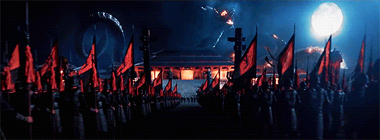
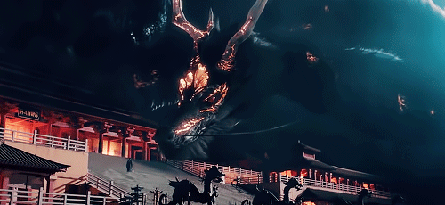
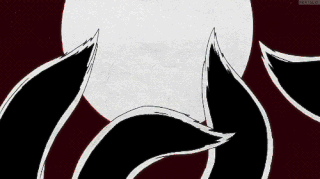
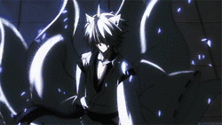

Na Mitologia Asiatica existem varios seres enigmaticos e extraordinarios que compõe a história e cultura dos paises que fazem parte desse continente imenso e antigo. Eles influenciam a imaginação do povo e até mesmo causam medo e espanto, ou causam um grande respeito, nada é em vão! Confira aqui alguns deles!
E o que que escolhemos para falar um pouquinho mais!
Estão preparados Monsters Lovers?
Boa leitura!
Site oficial de MOnstersMIt!!!

Dragão Chines!!!
Estes seres mitológicos representam a sabedoria e são o emblema de todos os imperadores do país asiático. Seu corpo é de cobra, cabeça de crocodilo, olhos de gato e crina de leão, entre outros atributos de uma grande diversidade de animais.
Um dos dragões japoneses mais famosos é o Yamata no Orochi, uma fera terrível com oito cabeças e oito caudas, morta pelo deus do mar e das tempestades chamado Susanoo.

Kitsune Raposa de Nove Caldas!!!
A lenda das Kitsunes (palavra japonesa para raposa) é uma das mais populares na cultura do Japão. Ainda que muitos dos mitos sobre ela sejam encontrados também nos folclores da China, Coreia e Índia. Quase todas essas lendas estão ligadas à sabedoria, pois a raposa representa, em seu simbolismo, a inteligência e sagacidade. Além disso, são considerados seres emocionais e muito vingativos.
Segundo as lendas, as Kitsunes são animais sagrados ou amaldiçoados com poderes místicos. Têm uma ligação muito forte com suas promessas, e as pessoas que as quebram se tornam seus inimigos mortais. A relação desses seres com a “palavra de honra” é bastante forte, pois a quebra de uma promessa os leva à autodestruição. Os poderes das raposas mágicas, como também são chamadas, aumentam de acordo com a sua sabedoria e idade.
A cada 100 anos ganham uma nova cauda e, quando chegam às nove caudas, tornam-se semideuses.
5.1 Gumiho (raposa de nove caudas coreana)
No folclore coreano, a 구미호 (kumiho na pronúncia) carrega aspectos negativos, diferente das versões japonesa e chinesa. É visto como um ser amaldiçoado e que pode livremente transformar-se, entre outras coisas, em uma bela moça ou rapaz. Assim, utiliza desse artefato para seduzir as pessoas e comer o seu fígado ou coração (dependendo da legenda).
Muito parecido com lobisomens ou vampiros no folclore ocidental, há sempre variações sobre o mito, dependendo das liberdades que cada história tem com a lenda. Uma versão da mitologia, no entanto, afirma que com bastante vontade, um kumiho poderia alterar seu estado yokwe (monstro) e tornar-se permanentemente humano e perder seu caráter malígno.
Explicações de como isso poderia ser conseguido variam, mas às vezes incluem sacrifícios como: abster-se de matar ou de degustar carne por mil dias, ou a obtenção de um Cintamani (equivalente a pedra filosofal na cultura budista e hinduísta).
Se tornou um tema importante em K-dramas e você pode saber mais assistindo à eles:
Forbidden Love (2004)
Minha namorada é uma Gumiho (2010)
Grudge: The Revolt of Gumiho (2010)
The Thousandth Man (2012)
Gu Family Book (2013)
Tale of Fox Nine Tails (2020)
Meu colega de quarto é um Gumiho (2021)
 
Lady Gaga nos contou tudo, sobre sua viagem até o planeta Terra e como era sua vida no planeta Vênus.

.gif)